Authors: Nuno Caçoilo, Shunsuke Fukami, Olivier Fruchart, Ioan-Lucian Prejbeanu
Type: both · Category: other · PDF: https://arxiv.org/pdf/2608.20850v1
Analysis basis: full PDF text, analyzed in chunks
Topic relevance: analog quantum simulation 1/5 · quantum measurements 1/5
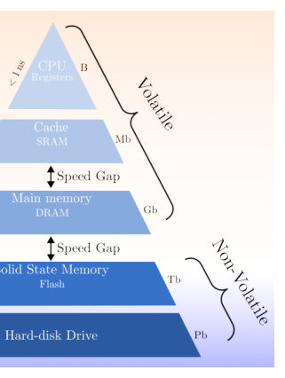
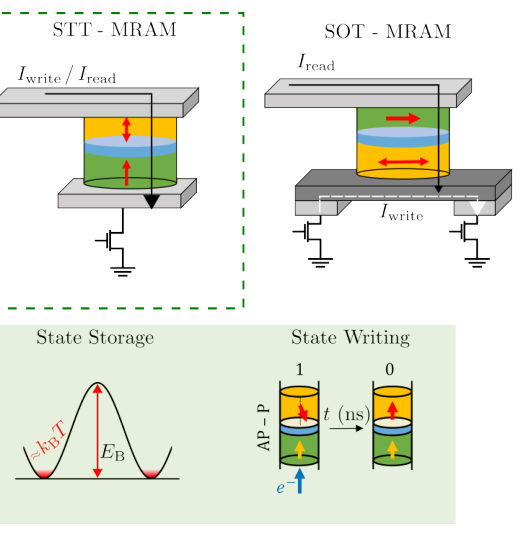
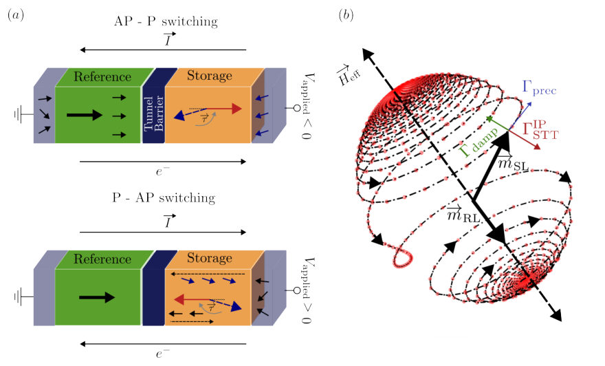
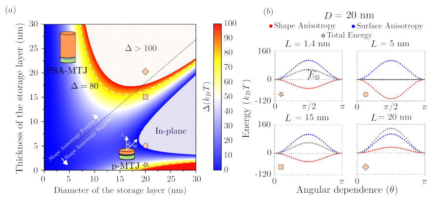
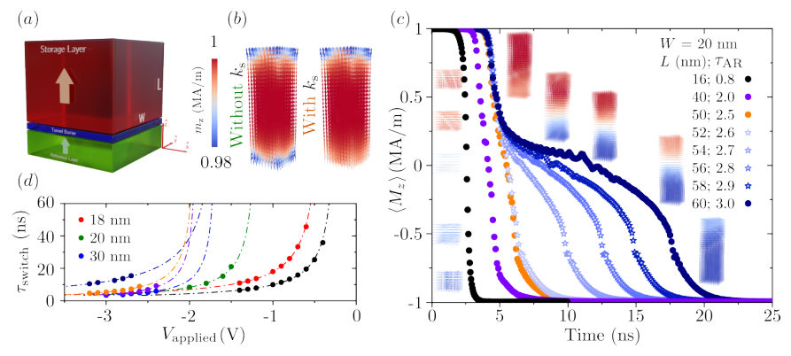
Summary. This paper tackles the critical scalability issue in pSTT-MRAM by proposing the use of 3D storage layers to enhance shape anisotropy. By understanding the physics of magnetization reversal, the authors demonstrate a viable path to maintain high thermal stability and achieve faster switching speeds in ultra-small magnetic tunnel junctions.
Why it may be interesting. While focused on spintronics, the underlying physics of magnetization dynamics, energy barriers, and stability in nanoscale magnetic systems touches upon concepts relevant to engineered quantum states and energy landscapes in open quantum systems.
Main problem. The primary challenge addressed is the scalability of Perpendicular Spin Transfer Torque Magnetic Random Access Memory (pSTT-MRAM) devices, which suffer from insufficient thermal stability at nodes smaller than 20 nm.
Main result. The authors propose that maintaining high thermal stability at sub-10 nm nodes is viable by leveraging shape anisotropy through the use of a 3D storage layer structure.
Method. The work combines technological advancements with theoretical understanding of magnetization reversal dynamics to achieve faster switching speeds at lower voltages.
Model / system. The physical system is the Magnetic Tunnel Junction (MTJ), which utilizes ultra-thin magnetic tunnel junctions incorporating a fixed reference layer and a free storage layer.
Key observables. Thermal stability factor ($\Delta$), Tunnel Magnetoresistance (TMR), switching speed, and switching voltage.
Important parameters / regimes. Device node size (sub-10 nm), shape anisotropy, and the required TMR ratio ($\ge 200\%$).
Assumptions / limitations. The approach relies on enhancing the volume and vertical aspect-ratio of the storage layer to counteract the loss of thermal stability as dimensions shrink.
Figures summary. Figure 1 illustrates the memory hierarchy (speed vs. density), and Figure 2 provides schematics of different MRAM designs showing the reference and storage layers.
Paper structure. The paper progresses by first identifying the scalability limits of pSTT-MRAM, then proposing the 3D storage layer solution, and finally detailing the technological advancements and physics governing magnetization reversal for ultra-small junctions.
The perpendicular Spin Transfer Torque Magnetic Random Access Memory is one of the most promising emerging non-volatile memory technologies, based on ultra-thin magnetic tunnel junctions. However, as these devices are limited by their thermal stability factor at technological nodes smaller than 20 nm, their scalability is compromised. A possible solution to this limitation relies on taking advantage of the shape anisotropy, by increasing substantially the thickness of the storage layer. Thanks to the combination of a vertical aspect-ratio and enhanced volume, high thermal stability can be maintained at sub-10 nm nodes. Here, we present the technological advancements and understanding of the magnetisation reversal that led to faster switching speeds at reduced switching voltage, providing a viable approach for dense arrays of ultra-small magnetic tunnel junctions.
Authors: Bruno M. Miranda, Ardiley T. Avelar, Wesley B. Cardoso, Dionisio Bazeia
Type: theory · Category: other · PDF: https://arxiv.org/pdf/2608.21331v1
Analysis basis: full PDF text, analyzed in chunks
Topic relevance: analog quantum simulation 1/5
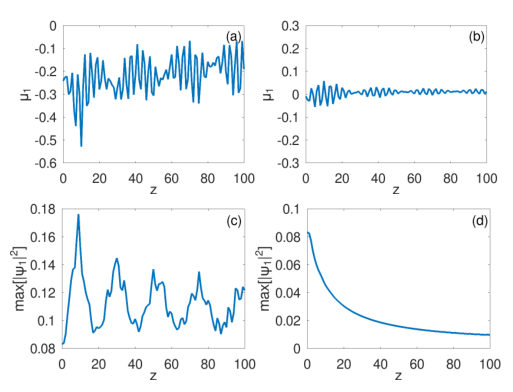
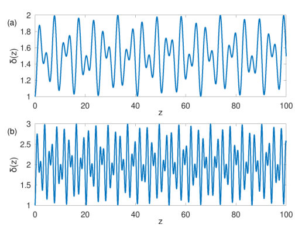
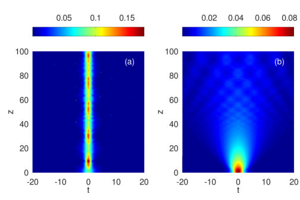
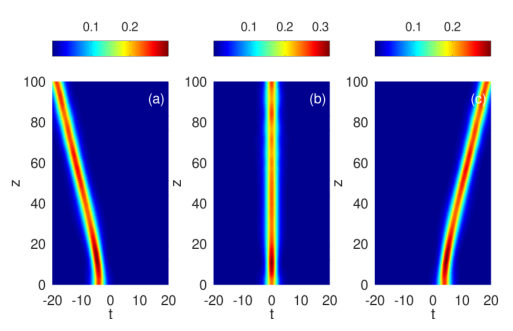
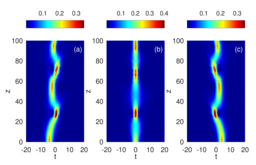
Summary. This work analyzes how quasi-periodic nonlinear modulation affects the dynamics of solitons in three coupled optical waveguides. By simulating the system, the authors demonstrate that the sign of the modulation dictates whether solitons experience attraction, leading to bound states, or repulsion, causing them to separate. This research is significant for understanding and controlling light pulse propagation in advanced nonlinear optical devices.
Why it may be interesting. The study provides a concrete example of how time- or space-dependent nonlinear coupling terms (quasi-periodicity) can fundamentally alter the stability and interaction dynamics of nonlinear waves, which is relevant to engineered photonic systems.
Main problem. The paper investigates the complex dynamics of localized solutions, specifically solitons, propagating in a system of three coupled waveguides.
Main result. The interaction between solitons is highly dependent on the sign of the quasi-periodic modulation amplitude ($A_0$), leading to distinct regimes of attraction (bound states) or repulsion (separation).
Method. The study relies on theoretical analysis complemented by detailed numerical simulations, utilizing techniques like the split-step method and FFT.
Model / system. The system is modeled by coupled Nonlinear Schrödinger Equations (NLS) describing three coupled optical waveguides. The coupling is modulated quasi-periodically via the cross-phase modulation coefficient, $\delta(z)$.
Key observables. Soliton profiles ($|\psi_i|^2$), center of mass, and variance of the field amplitudes.
Important parameters / regimes. The quasi-periodic modulation amplitude ($A_0$), the constant background coupling ($\delta_0$), and the wave numbers ($k_l$) defining the modulation.
Assumptions / limitations. The analysis assumes the system can be effectively described by the coupled NLS equations and focuses on the impact of the quasi-periodic modulation term.
Figures summary. Figures illustrate the spatial evolution of the field intensity for different modulation amplitudes ($A_0$), comparing stable/unstable solutions and showing the separation or convergence of solitons.
Paper structure. The paper details the model (Section II), presents numerical results analyzing different interaction regimes (Section III), and concludes with a discussion of the findings and future work (Section IV).
In this paper we investigate the behavior of localized solutions, specifically solitons, in a system of three coupled waveguides. The nonlinearity is modeled by a quasi-periodic modulation influencing the interaction between the waveguides. We analyze the evolution of the soliton profiles and their dynamics under varying modulation parameters, highlighting distinct behaviors such as attraction and repulsion among solitons. Our findings reveal that the system exhibits complex behaviors, depending on the interplay between the quasi-periodic modulation and the waveguide parameters. The study contributes to understanding the impact of quasi-periodic nonlinearity on soliton dynamics in coupled waveguide systems, laying the groundwork for potential applications in nonlinear optics and photonic devices.
Authors: Pubudu Wijesinghe, Melanie Dieterlen, Kyoungjun Lee, Ahmed Omran, Aswini Ramankutty, Chang-Beom Eom, Patrick Irvin, Jeremy Levy
Type: experiment · Category: other · PDF: https://arxiv.org/pdf/2608.21065v1
Analysis basis: full PDF text, analyzed in chunks
Topic relevance: interference shaping light 1/5
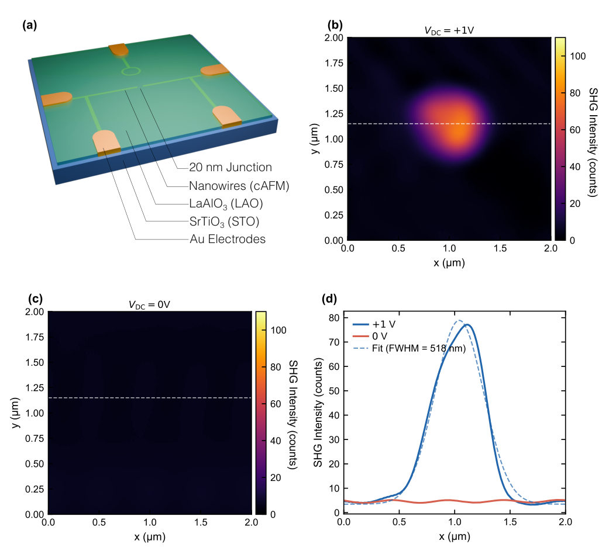
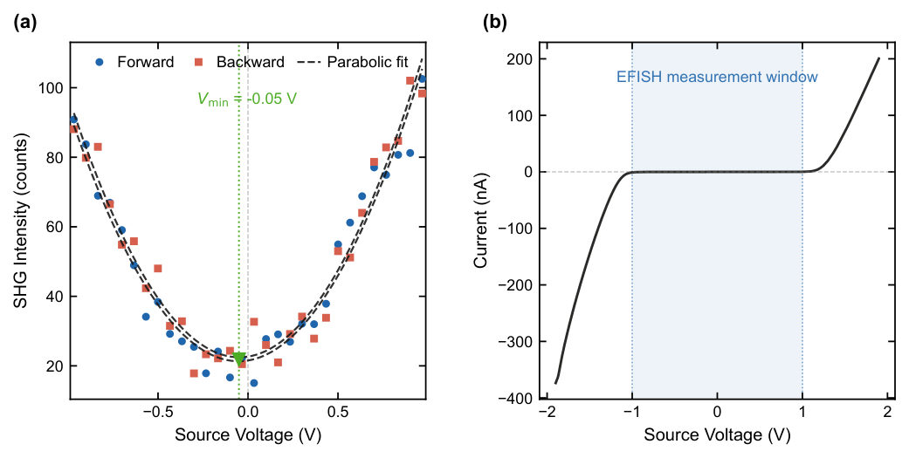
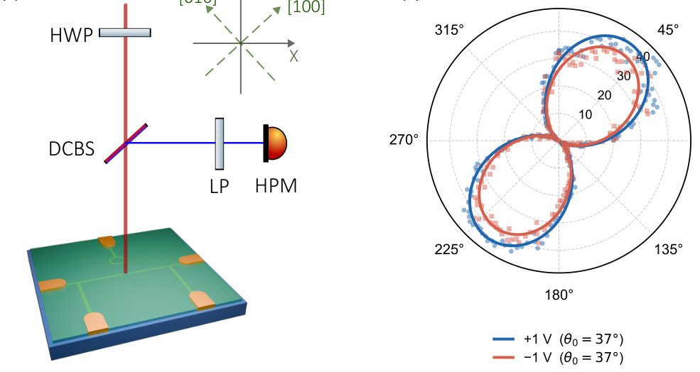
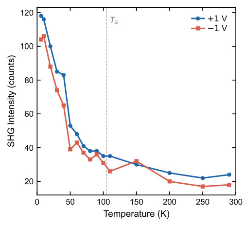
Summary. This paper reports on the observation of electric-field-induced second harmonic generation (EFISH) in a nanoscale LaAlO3/SrTiO3 tunnel junction. By applying a DC bias across the junction, the authors induce a large, tunable nonlinear optical response localized to the nanoscale gap. This establishes the junction as a reconfigurable platform for studying field-controlled nonlinear optics in oxide heterostructures.
Why it may be interesting. This work demonstrates a solid-state, electrically tunable source of nonlinear optical effects in a highly confined geometry, which is crucial for developing nanoscale quantum optical components.
Main problem. The challenge is achieving electrically tunable nonlinear optical responses at the nanoscale, as conventional materials lack the necessary combination of large susceptibility, nanoscale confinement, and in situ reconfigurability.
Main result. The authors successfully demonstrated electric-field-induced second harmonic generation (EFISH) in a nanoscale LaAlO3/SrTiO3 junction, showing a large, tunable signal ($\sim 380\%$ modulation depth) localized to the junction gap.
Method. The experiment uses conductive atomic force microscope (cAFM) lithography to create a nanoscale tunnel junction, across which a DC bias is applied while measuring the second harmonic generation (SHG) signal.
Model / system. The physical system is a reconfigurable LaAlO3/SrTiO3 nanojunction. The nonlinearity is modeled by the SHG intensity $I(2\omega) \propto |\chi^{(2)}_0 + \chi^{(3)} E_{ ext{DC}}|^2$, where the applied DC field $E_{ ext{DC}}$ breaks inversion symmetry and induces the second-order susceptibility $\chi^{(2)}$.
Key observables. SHG intensity vs. DC bias ($V_{ ext{DC}}$), input polarization dependence (two-lobed pattern), and temperature dependence (sharp rise below 50 K).
Important parameters / regimes. Estimated third-order susceptibility $|\chi^{(3)}| \approx 1 imes 10^{-19} ext{ m}^2/ ext{V}^2$ at 6 K; junction gap size $\sim 20 ext{ nm}$.
Assumptions / limitations. The analysis assumes the measured response is dominated by the field-induced $\chi^{(2)}$ term, and calibration against BBO is used to quantify $\chi^{(3)}$.
Figures summary. Figures illustrate the device geometry, the strong enhancement of SHG upon applying bias (Fig. 1b), the localization of the signal to the nanoscale gap (Fig. 1d), and the dependence of the signal on bias, polarization, and temperature (Figs. 2, 3, 4).
Paper structure. The paper establishes the problem, details the cAFM-written junction setup, presents measurements showing bias-dependent, polarization-dependent, and temperature-dependent SHG signals, and concludes by quantifying the field-induced nonlinear susceptibility.
Electrically tunable nonlinear optical responses at the nanoscale remain challenging to achieve because conventional nonlinear materials lack the combination of large susceptibility, nanoscale confinement, and in situ reconfigurability. Here we report electric-field-induced second harmonic (EFISH) generation from a nanoscale tunnel junction defined by conductive atomic force microscope lithography at the LaAlO$_3$/SrTiO$_3$ interface. A conducting channel written at the interface is interrupted by a nanoscale insulating gap, across which applied DC bias produces local electric fields exceeding $10^7$ V/m. The SHG signal is spatially localized at the junction, exhibits a quadratic bias dependence described by $I(2ω) \propto |χ^{(2)}_\mathrm{0} + χ^{(3)} E_\mathrm{DC}|^2$ with no hysteresis, a modulation depth exceeding 380% at $|V_\mathrm{DC}| = 1$ V, and shows a two-lobed input-polarization pattern aligned with the junction axis, consistent with EFISH from a centrosymmetric host. Calibration against a BBO reference crystal gives $|χ^{(3)}| \approx 1\times10^{-19}$ m$^2$/V$^2$ at 6 K. These results establish cAFM-written oxide nanojunctions as a reconfigurable platform for nanoscale nonlinear optics in which the junction geometry sets the symmetry of the response and the large field-induced $χ^{(2)}$ of SrTiO$_3$ provides the optical nonlinearity. Because the nonlinearity is both generated and read out within the same nanoscale gap, the junction operates simultaneously as a subwavelength source and a near-field detector of optical nonlinearity.
Authors: Xin Zhang, Shihao Zhang
Type: theory · Category: strongly correlated electrons · PDF: https://arxiv.org/pdf/2608.20695v1
Analysis basis: full PDF text, analyzed in chunks
Topic relevance: analog quantum simulation 1/5
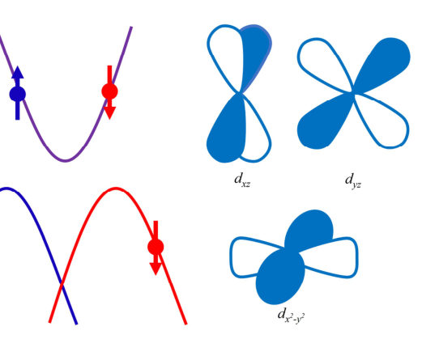
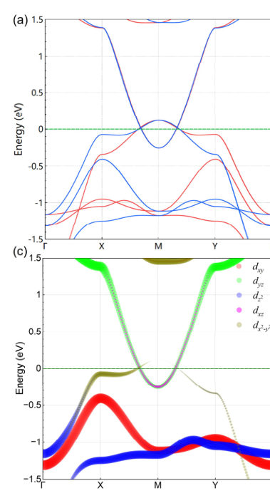
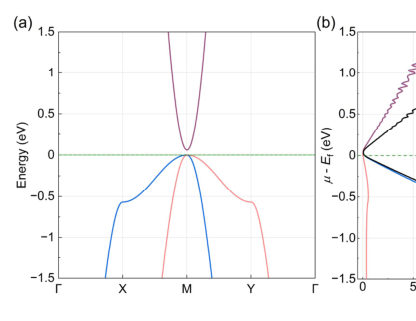
Summary. This work investigates the electronic structure of monolayer altermagnetic Ti2XX' materials, finding unique spin-splitting patterns. The key finding is the presence of nearly spin-degenerate conduction bands, which are sensitive to the Ti-X-Ti bond angle. This tunability suggests these materials are promising candidates for next-generation spintronic and information storage devices.
Why it may be interesting. The study of orbital-selective spin splitting and the ability to tune electronic states via structural parameters (bond angle) touches upon emergent quantum phenomena in condensed matter that are relevant to advanced quantum materials design.
Main problem. To systematically explore the novel electronic properties, particularly the transition between spin-degenerate and spin-split states, in monolayer altermagnetic Ti2XX' materials.
Main result. The materials exhibit anomalous nearly spin-degenerate conduction bands near the Fermi level, which can be tuned by doping or heterostructure construction, suggesting potential for information storage devices.
Method. First-principles calculations using DFT (PBE and HSE06 functionals) combined with tight-binding models and spin-resolved conductivity simulations.
Model / system. The physical system is the monolayer altermagnetic Ti2XX' (X/X' = F, Cl, Br, I). The analysis focuses on the interplay between bond-angle-sensitive super-exchange interactions in the d_xz/d_yz orbitals.
Key observables. Spin-splitting magnitude ($\Delta E$), spin-resolved conductivities ($\sigma_{xx}^{\uparrow}, \sigma_{xx}^{\downarrow}$), and the degree of spin degeneracy in the conduction bands.
Important parameters / regimes. Ti-X-Ti bond angle ($ heta$), Fermi level position, and the choice of DFT functional (PBE vs. HSE06).
Assumptions / limitations. The analysis relies on the ligand-mediated super-exchange picture and uses the Slater-Koster two-center approximation in the tight-binding model.
Figures summary. Figures show schematic structures, band-structure results confirming spin-split valence bands and spin-degenerate conduction bands, and projected band weight curves illustrating orbital contributions.
Paper structure. The paper progresses from identifying the unique spin-splitting features in the valence bands to explaining the anomalous conduction band degeneracy via bond-angle-sensitive super-exchange, culminating in the potential for electronic state switching via doping.
Altermagnets have attracted intensive attention recently, owing to their unique combination of zero net magnetic moment of antiferromagnets and momentum space spin-splitting of ferromagnets. Herein, we systematically explore monolayer altermagnetic Ti$_2$XX' (X/X' = F, Cl, Br, I) materials for novel electronic properties. Especifically, spin-splitting exists in the valence bands of all studied materials, whereas several compositions exhibit nearly spin-degenerate conduction bands near the Fermi level, which is markedly different from conventional altermagnets. This phenomenon can be attributed to the bond-angle-sensitive super-exchange occurring in the $d_{xz}$ or $d_{yz}$ orbitals, while the super-exchange of the $d_{x^2-y^2}$ orbital is not sensitive to the Ti-X-Ti bond angle. Motivated by this intriguing phenomenon, Fermi level modulation via doping or heterostructure construction enables the transition between two electronic states, endowing these materials great application potential in information storage devices.
Authors: S. V. Mironov, A. S. Mel'nikov, A. I. Buzdin
Type: theory · Category: other · PDF: https://arxiv.org/pdf/2608.20535v1
Analysis basis: full PDF text, analyzed in chunks
Topic relevance: Keldysh / 2PI / non-Gaussian methods 1/5
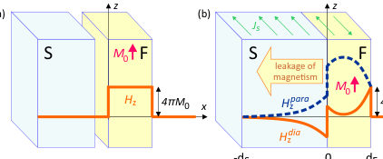
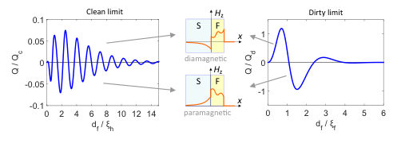
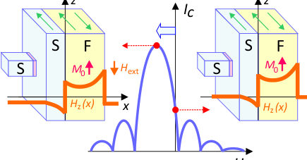
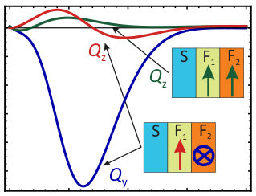
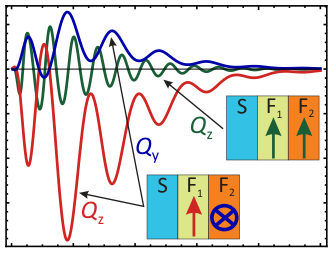
Summary. This perspective review surveys the physics of superconductor-ferromagnet hybrids, focusing on how magnetic ordering and interfacial spin-orbit coupling induce long-range electromagnetic effects. It details mechanisms like the electromagnetic proximity effect, which leads to measurable magnetic field modifications in the superconductor. The work is crucial for understanding superconducting spintronics and developing novel quantum devices.
Why it may be interesting. The interplay between superconductivity, magnetism, and spin-orbit coupling in nanoscale structures presents rich, non-equilibrium many-body physics relevant to open quantum systems and superconducting qubits.
Main problem. The paper reviews the long-range electromagnetic phenomena occurring in hybrid superconductor-ferromagnet (S/F) structures, driven by proximity effects and interfacial spin-orbit coupling (SOC).
Main result. The review highlights the existence of a long-range electromagnetic proximity effect where superconducting currents penetrate the ferromagnet, inducing measurable magnetic fields in the superconductor.
Method. The analysis involves reviewing theoretical models derived from electrodynamics (Maxwell's equations) applied to superconducting transport phenomena in layered magnetic structures.
Model / system. The physical system is the S/F hybrid junction. Key mechanisms include the standard proximity effect, the electromagnetic proximity effect (where F magnetization induces screening currents in S), and SOC effects leading to nonreciprocal transport.
Key observables. Long-range magnetic field profiles ($B$), shifts in Fraunhofer critical current oscillations, and nonreciprocal transport signals (spin-galvanic, photogalvanic).
Important parameters / regimes. London penetration depth ($\lambda$), superconducting coherence length ($\xi$), and the magnetization ($M_0$) of the ferromagnet.
Assumptions / limitations. The analysis often relies on approximations such as the dirty limit or specific geometric assumptions regarding layer thicknesses relative to penetration depths.
Figures summary. Figures illustrate the magnetic field profile difference between separated and electrically contacted S/F layers, and show the expected shift in Fraunhofer critical current oscillations.
Paper structure. The review progresses by contrasting the competing orders of S and F, detailing the electromagnetic proximity effect, then focusing on the role of SOC in generating spontaneous currents, and concluding with discussions on future theoretical and experimental directions.
In this Perspective we review recent achievements in physics and applications of hybrid superconductor-ferromagnet structures. In particular, we focus on the manifestations of the electromagnetic phenomena in these systems originating from the response of the induced superconducting correlations modified by the exchange field and additional effects coming from the interface Rashba-type spin-orbit coupling. The review includes the long-range electromagnetic proximity effect and related modification of magnetic textures, spontaneous currents, properties of vortex matter and its interaction with magnetic ordering, spin-galvanic, photogalvanic and nonreciprocal transport phenomena in exemplary hybrid systems. We also present our views on the future development of this field including both the theoretical challenges and promising opportunities for fundamental experiments.
Authors: Nicolas Lejeune, Simon Van der Heyde, Alejandro V. Silhanek
Type: experiment · Category: other · PDF: https://arxiv.org/pdf/2608.20862v1
Analysis basis: full PDF text, analyzed in chunks
Topic relevance: quantum measurements 1/5
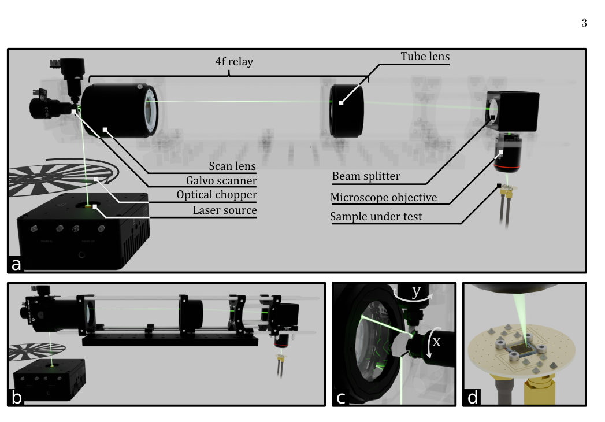
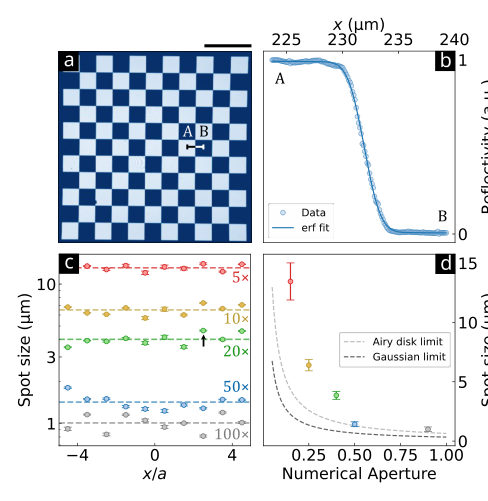
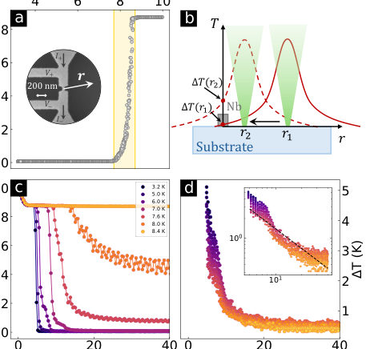
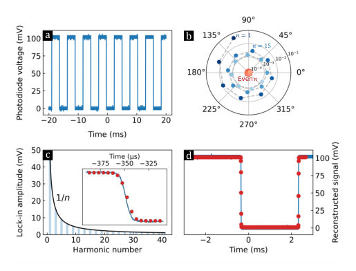
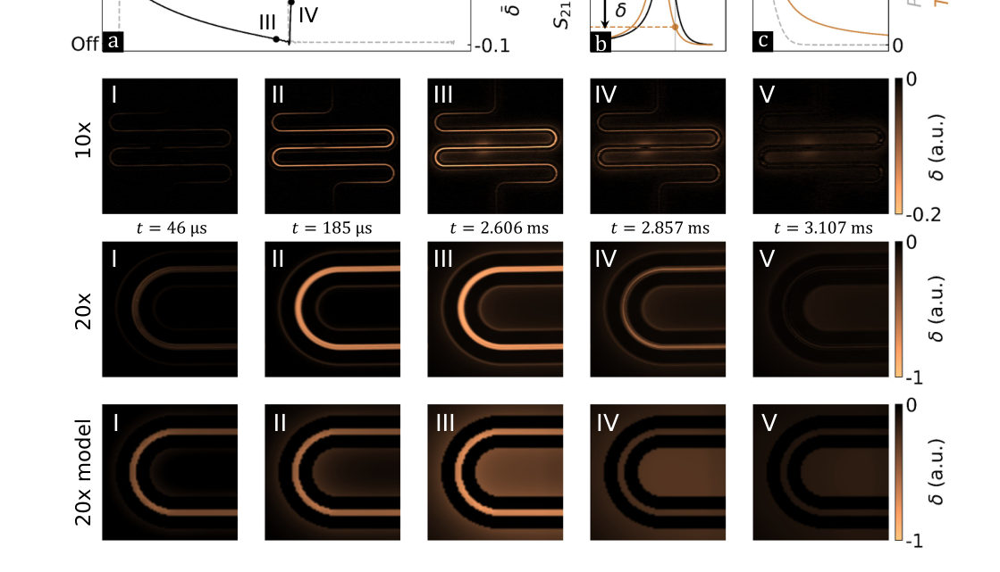
Summary. This work introduces a novel, high-resolution technique using low-temperature scanning laser microscopy combined with multiharmonic lock-in detection to map the time evolution of thermal susceptibility. By analyzing the frequency components of the photoresponse, the authors can reconstruct dynamic thermal images, enabling the measurement of heat diffusion parameters in superconducting materials. This method offers a powerful tool for characterizing thermal dynamics in low-dimensional quantum devices.
Why it may be interesting. The ability to map thermal susceptibility dynamically provides a powerful, non-invasive probe into energy dissipation and heat transport mechanisms in superconducting circuits, which is crucial for understanding device performance and thermal management in quantum technologies.
Main problem. To achieve time-resolved thermal susceptibility mapping with high spatial resolution, especially for dynamic thermal characterization on time scales shorter than the intrinsic scanning speed.
Main result. The technique successfully reconstructs time-domain thermal responses from frequency-domain harmonic data, allowing for the measurement of heat diffusion parameters like thermal diffusivity and propagation speed in superconducting structures.
Method. A multiharmonic lock-in detection approach utilizing the inverse Fast Fourier Transform (FFT) is employed on a custom low-temperature scanning laser microscope setup.
Model / system. The experiment is performed on superconducting resonators (e.g., Nb bridges, YBCO meanders) cooled to low temperatures, where localized laser heating induces measurable changes in electrical resistance.
Key observables. Photoresponse, local thermal susceptibility ($\Pr$), temperature profile ($\Delta T(r)$), and the time delay of the thermal response.
Important parameters / regimes. Time resolution ($\sim$ few-$\mu$s), spatial resolution, thermal diffusivity ($D$), and heat propagation speed ($v$).
Assumptions / limitations. The reconstruction assumes the measured signal is a global dynamic susceptibility, and the analysis relies on fitting temperature responses across distinct spatial regimes (near-field, intermediate, far-field).
Figures summary. Figures illustrate the SLM setup, calibration using chessboards, the dependence of laser spot size on NA, and critically, the reconstruction of time-domain thermal responses (e.g., square wave $ ightarrow$ saw-tooth $ ightarrow$ sine wave) as a function of distance from the excitation source.
Paper structure. The paper details the development of the multiharmonic lock-in technique, validates the setup using calibration standards, applies it to measure steady-state temperature profiles, and culminates in analyzing the time-dependent thermal response across various spatial regimes to extract diffusion constants.
We present a multiharmonic lock-in detection approach that utilizes the inverse Fast Fourier Transform to reconstruct the time evolution of thermal susceptibility with high spatial resolution. The method is implemented on a custom-built, modular scanning laser microscope designed for operation in low working-distance optical cryostats and thoroughly calibrated for spatial accuracy. A demonstrative case study using a superconducting resonator highlights the capability of this technique to generate thermal images on time scales significantly shorter than the intrinsic scanning speed, thus enabling dynamic thermal characterization with high spatial fidelity. The proposed technique of low-temperature time-resolved scanning laser microscopy offers unique opportunities to explore superconducting devices, 2D materials, hybrid planar structures, and other low-dimensional systems.
Authors: Yury Solyaev, Kirill Shelkov, Pavel Polyakov
Type: both · Category: other · PDF: https://arxiv.org/pdf/2608.21016v1
Analysis basis: full PDF text, analyzed in chunks
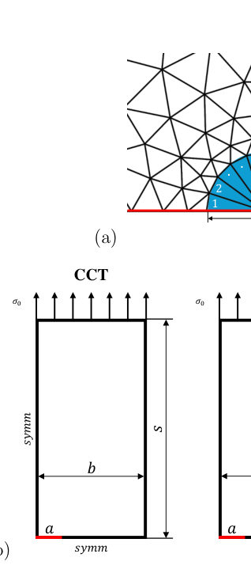
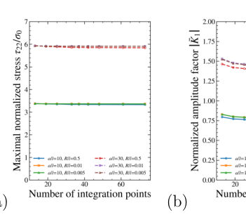
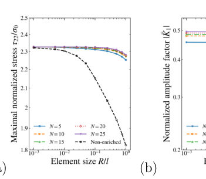
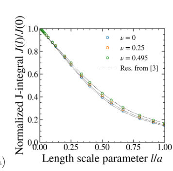
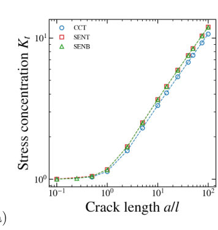
Summary. This paper develops a framework using simplified Strain Gradient Elasticity (SGE) to model fracture in brittle and quasi-brittle materials, incorporating the effect of material size. By performing numerical simulations on standard fracture tests, the authors successfully derive explicit and empirical relations to identify the material's characteristic length scale parameter ($\ell$). This advancement allows for a more accurate prediction of fracture loads that account for size effects beyond classical linear elastic fracture mechanics.
Why it may be interesting. Not directly relevant
Main problem. The paper aims to identify the length scale parameter ($\ell$) of simplified strain gradient elasticity (SGE) by analyzing standard Mode I fracture tests.
Main result. For brittle materials, the length scale parameter is explicitly identified as $\ell \approx 0.362 (K_{Ic}/\sigma_{ult})^2$, while regression relations are derived for quasi-brittle materials to describe the non-classical size effect.
Method. The authors use precise numerical simulations within the SGE framework, deriving regression relations from experimental data obtained from standard fracture mechanics tests (CCT, SENT, SENB) under pure Mode I loading.
Model / system. The model is the simplified SGE, which extends classical elasticity by incorporating a single length scale parameter $\ell$ via higher-order strain gradient terms (double stress $\mu_{ijk}$). This is applied to brittle and quasi-brittle materials exhibiting crack size effects.
Key observables. Length scale parameter ($\ell$), fracture loads, stress and strain concentrations, and the J-integral.
Important parameters / regimes. Length scale parameter ($\ell$), fracture toughness ($K_{Ic}$), ultimate stress ($\sigma_{ult}$), and the ratio $R/l$.
Assumptions / limitations. The simplified SGE is an approximation, and the identification of $\ell$ for brittle materials ensures load coincidence with classical LEFM only for relatively long cracks.
Figures summary. Figures illustrate the FEM mesh near the crack tip using enriched elements and show convergence studies for stress components ($ au_{22}$) and fracture parameters ($K_1, K_2$) with respect to integration points and mesh density.
Paper structure. The paper details the theoretical formulation of SGE, presents the numerical methodology using enriched FEM for standard fracture geometries (CCT, SENT, SENB), derives the identification relations for $\ell$, and validates these relations using both theoretical derivations and comparisons with experimental data.
Recently, it was shown that additional material constants of strain gradient elasticity (SGE) can be identified for brittle and quasi-brittle materials based on the analysis of experimental data on the crack size effect. In the present paper, we perform precise numerical simulations within SGE and derive regression relations for processing experimental data from standard fracture mechanics tests under pure Mode I loading conditions (CCT, SENT, SENB). We consider the simplified SGE, whose constitutive relations contain a single length scale parameter $\ell$ in addition to the classical elastic constants. We show that, for brittle materials, this parameter can be explicitly identified as $\ell \approx 0.362 (K_{Ic}/σ_{ult})^2$. This identification ensures that the fracture loads predicted by classical linear elastic fracture mechanics (LEFM) and by the simplified SGE coincide for relatively long Mode I cracks. However, within the simplified SGE, these fracture loads are evaluated from the nonsingular stress field using the maximum principal stress criterion. For quasi-brittle materials, we derive regression relations that describe the non-classical size effect on strength. This effect is usually treated within nonlinear fracture mechanics but can be naturally captured by SGE. Examples of identification of the length scale parameter $\ell$ based on the established relations and the experimental data for chopped fiber composites and for porous and dense quasi-brittle ceramics are presented.
Authors: Daegeun Jo, Peter M. Oppeneer, Mohsen Yarmohammadi
Type: theory · Category: other · PDF: https://arxiv.org/pdf/2608.20528v1
Analysis basis: full PDF text, analyzed in chunks
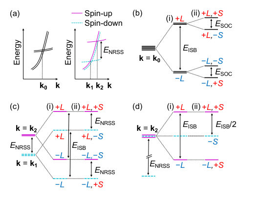
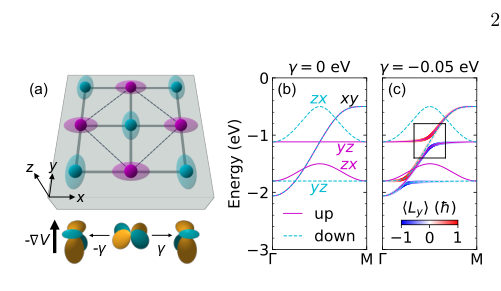
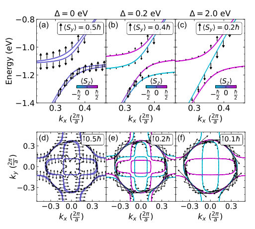
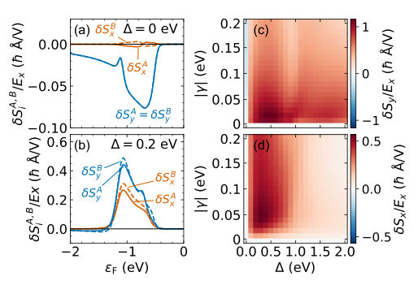
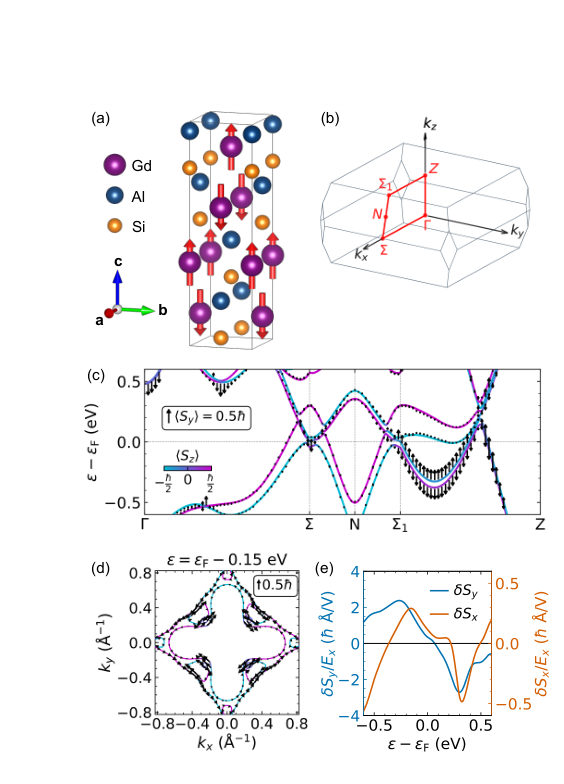
Summary. This work explores how nonrelativistic spin splitting (NRSS) significantly modifies the relativistic Rashba effect in altermagnets (AMs). By combining theoretical modeling with DFT calculations on GdAlSi, the authors show that this interplay leads to an anomalously enhanced charge-to-spin conversion efficiency. This identifies AMs as promising platforms for advanced spintronic applications.
Why it may be interesting. While the primary focus is on spintronics, the detailed analysis of spin-momentum locking and spin-orbit coupling mechanisms in magnetic materials is highly relevant to understanding topological and spin-related phenomena in condensed matter physics.
Main problem. The paper investigates the interplay between nonrelativistic spin splitting (NRSS) and relativistic spin-orbit coupling (SOC) in altermagnets (AMs), specifically how NRSS modifies the Rashba effect.
Main result. The interplay allows for anomalously large charge-to-spin conversion with a spin polarization that can be tuned by the Néel vector, demonstrating a distinctive enhancement in AMs compared to ferromagnetic systems.
Method. The study employs a combination of theoretical tight-binding modeling and first-principles Density Functional Theory (DFT) calculations.
Model / system. The system studied is the altermagnet GdAlSi, modeled using DFT (FLAPW method) and supplemented by a generic 2D d-wave tight-binding model Hamiltonian incorporating NRSS, SOC, and Inversion Symmetry Breaking (ISB).
Key observables. Rashba spin splitting, charge-to-spin conversion efficiency (Spin Edelstein Effect, SEE), and sublattice-resolved spin polarizations.
Important parameters / regimes. The relative energy scales of SOC ($E_{SOC}$), NRSS ($E_{NRSS}$), and ISB ($E_{ISB}$), particularly the moderate regime where $E_{SOC} \ll E_{NRSS} \lesssim E_{ISB}$.
Assumptions / limitations. The analysis relies on the tight-binding model approximation and the inclusion of a Hubbard U term for Gd 4f electrons in the DFT calculations.
Figures summary. Figures illustrate band structures showing the evolution of Rashba splitting under varying NRSS strengths, and show spin textures and orbital angular momentum polarization on the Fermi surface for both AM and FM models.
Paper structure. The paper first establishes the theoretical framework using a tight-binding model to analyze the interplay of NRSS and SOC. It then uses DFT on GdAlSi to corroborate these effects, calculating the SEE and demonstrating the enhancement due to the AM nature.
Despite their compensated magnetic moments, altermagnets (AMs) exhibit nonrelativistic spin splitting (NRSS) that offers routes to spintronic functionality without relying on relativistic spin-orbit coupling. However, how NRSS influences relativistic phenomena remains largely unexplored. Here we show that NRSS plays a crucial role in reshaping the Rashba effect in AMs with broken inversion symmetry. Using a tight-binding model, we demonstrate that Rashba spin splitting, whose magnitude is typically limited by the strength of spin-orbit coupling, is governed by NRSS energy scales. The resulting Rashba bands combined with NRSS generate anomalously large charge-to-spin conversion with a Néel-vector-tunable spin polarization. First-principles calculations for the noncentrosymmetric AM GdAlSi corroborate the emergence of these effects in a real system. Our results reveal the interplay between nonrelativistic and relativistic effects in AMs and identify them as fertile platforms for spin-orbitronic applications.
Authors: Sonika Jangid, Rhea Stewart, Adrian D. Hillier, R. P. Singh
Type: experiment · Category: other · PDF: https://arxiv.org/pdf/2608.21273v1
Analysis basis: full PDF text, analyzed in chunks
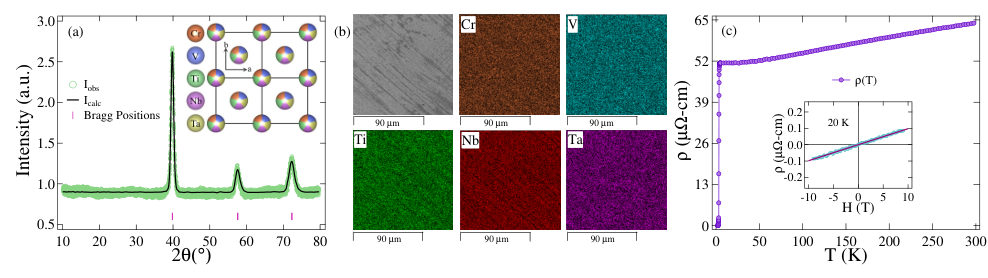
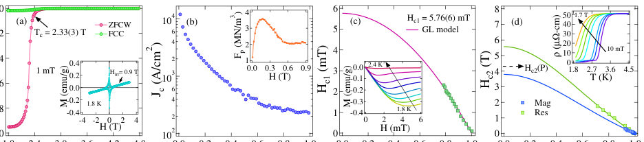
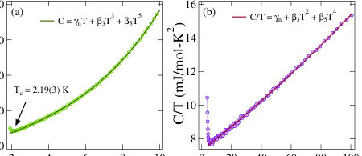
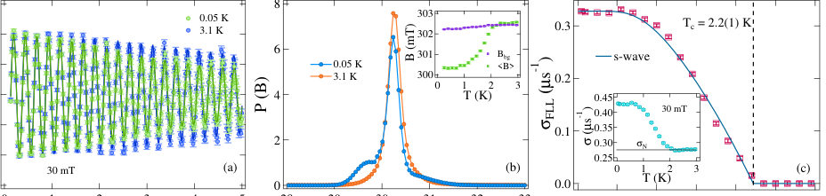
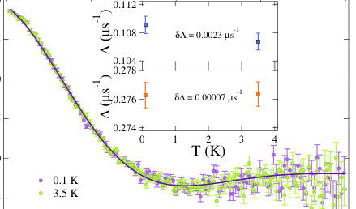
Summary. This work reports on the superconducting properties of a disordered Cr-based High-Entropy Alloy (HEA). Using $\mu$SR and magnetic measurements, the authors confirm bulk superconductivity with an s-wave gap. The findings establish this HEA as a promising model system for understanding the complex interplay between chemical disorder, magnetism, and superconductivity.
Why it may be interesting. The combination of extreme disorder (HEA) and superconductivity provides a unique platform to test theories of unconventional pairing and pair-breaking mechanisms, which are relevant to understanding complex quantum many-body states.
Main problem. The study investigates how magnetic elements influence superconductivity within highly disordered High-Entropy Alloys (HEAs).
Main result. The Cr-V-Ti-Nb-Ta HEA exhibits bulk type-II superconductivity with a $T_c$ of 2.33 K, showing an s-wave gap and preserved time-reversal symmetry.
Method. The research employed multiple experimental techniques including resistivity, magnetization (ZFCW/FCC), and Muon Spin Rotation ($\mu$SR) measurements.
Model / system. The physical system is the Cr-V-Ti-Nb-Ta equiatomic HEA, which crystallizes in a bcc structure and is characterized by significant chemical disorder.
Key observables. Superconducting transition temperature ($T_c$), upper critical field ($H_{c2}$), superconducting gap symmetry (s-wave), and time-reversal symmetry preservation.
Important parameters / regimes. The material is analyzed in the context of disorder, magnetism, and the interplay between these factors in HEAs.
Assumptions / limitations. The discrepancy between $T_c$ measured by resistivity and magnetization suggests potential superconducting inhomogeneity.
Figures summary. Figures illustrate sample characterization (XRD, EDS, $ ho(T)$) and superconducting properties, including magnetization hysteresis loops and field dependencies of $H_{c1}$ and $H_{c2}$.
Paper structure. The paper follows a standard experimental structure: characterization of the HEA, confirmation of bulk superconductivity via multiple measurements, detailed analysis of superconducting parameters using GL models, and finally, probing the pairing symmetry using $\mu$SR.
High-entropy alloy superconductors, characterized by extreme chemical disorder and complex electronic environments, have attracted significant attention as model systems for exploring superconductivity in disordered materials. Here, we investigate a Cr-based equiatomic HEA, Cr-V-Ti-Nb-Ta, which contains a magnetic 3d element, providing an opportunity to examine the influence of magnetic elements on superconductivity in highly disordered systems. Despite expected magnetic pair-breaking, this alloy exhibits bulk type-II superconductivity with a transition temperature of $T_c = 2.33(3)$ K and a high upper critical field. Transverse-field $μ$SR measurements reveal an s-wave superconducting gap close to the BCS value, while zero-field $μ$SR suggests preserved time-reversal symmetry. These results establish Cr-V-Ti-Nb-Ta as a promising platform for exploring the interplay between disorder, magnetism and superconductivity in high entropy alloys.